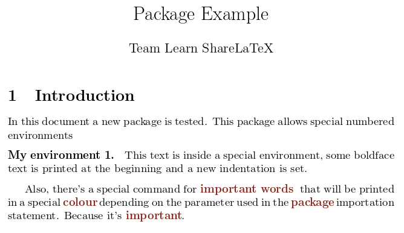

Writing your own package
Sometimes the best option to use your own commands and macros in a document is to write a new package from scratch. This article explains the main structure of a new package.
Introduction
The first thing to do before coding a new package is to determine whether you really need a new package or not. It's recommended to search on CTAN (Comprehensive TeX Archive Network) and see if someone already created something similar to what you need.
Another important thing to have in mind is the difference between packages and classes. Making the wrong choice can affect the flexibility of the final product.
General structure
The structure of all package files can be roughly described in the next four parts:
- Identification. The file declares itself as a package written with the LaTeX2ε syntax.
- Preliminary declarations. Here the external packages needed are imported. Also, in this part of the file the commands and definitions needed by the declared options are coded.
- Options. The package declares and processes the options.
- More declarations. The main body of the package. Almost everything a package does is defined here.
In the next subsections a more detailed description of the structure and a working example, examplepackage.sty, will be presented.
Identification
There are two simple commands that all packages must have:
\NeedsTeXFormat{LaTeX2e}
\ProvidesPackage{examplepackage}[2014/08/24 Example LaTeX package]
The command \NeedsTeXFormat{LaTeX2e} sets the LaTeX version for the package to work. Additionally, a date can be added within brackets to specify the minimal release date required.
The command ProvidesPackage{examplepackage}[...] identifies this package as examplepackage and, inside the brackets, the release date and some additional information is included. The date should be in the form YYYY/MM/DD
Open an example of how to write a package in Overleaf
Preliminary declarations
Most of the packages extend and customize existing ones, and also need some external packages to work. Below, some more code is added to the sample package "examplepackage.sty".
\NeedsTeXFormat{LaTeX2e}
\ProvidesPackage{examplepackage}[2014/08/21 Example package]
\RequirePackage{imakeidx}
\RequirePackage{xstring}
\RequirePackage{xcolor}
\definecolor{greycolour}{HTML}{525252}
\definecolor{sharelatexcolour}{HTML}{882B21}
\definecolor{mybluecolour}{HTML}{394773}
\newcommand{\wordcolour}{greycolour}
The commands in this part either initialize some parameters that latter will be used to manage the options, or import external files.
The command \RequirePackage is very similar to the well-known \usepackage, adding optional parameters within brackets will also work. The only difference is that the \usepackage can not be used before \documentclass command. It's strongly recommended to use \RequirePackage when writing new packages or classes.
Open an example of how to write a package in Overleaf
Options
To allow some flexibility in the packages a few additional options are very useful. The next part in the file "examplepackage.sty" handles the parameters passed to the package-importing statement.
\NeedsTeXFormat{LaTeX2e}
\ProvidesPackage{examplepackage}[2014/08/21 Example package]
\RequirePackage{imakeidx}
\RequirePackage{xstring}
\RequirePackage{xcolor}
\definecolor{greycolour}{HTML}{525252}
\definecolor{sharelatexcolour}{HTML}{882B21}
\definecolor{mybluecolour}{HTML}{394773}
\newcommand{\wordcolour}{greycolour}
\DeclareOption{red}{\renewcommand{\wordcolour}{sharelatexcolour}}
\DeclareOption{blue}{\renewcommand{\wordcolour}{mybluecolour}}
\DeclareOption*{\PackageWarning{examplepackage}{Unknown ‘\CurrentOption’}}
\ProcessOptions\relax
Below a description of the main commands that can handle the options passed to the package.
The command \DeclareOption{}{} handles a given option. It takes two parameters, the first one is the name of the option and the second one is the code to execute if the option is passed.
The command \OptionNotUsed will print a message in the compiler and the logs, the option won't be used.
The command \Declareoption*{} handles every option not explicitly defined. It takes only one parameter, the code to execute when an unknown option is passed. In this case it will print a warning by means of the next command:
\PackageWarning{}{}. See handling errors for a description about what this command does.
\CurrentOption stores the name of the package option being handled at a determined moment.
The command \ProcessOptions\relax executes the code fore each option and must be inserted after all the option-handling commands were typed. There's a starred version of this command that will execute the options in the exact order specified by the calling commands.
In the example, if the options red or blue are passed to the \usepackage command within the document, the command \wordcolor is redefined. Both colours and the default grey colour were defined in the preliminary declarations after importing the xcolor package.
Open an example of how to write a package in Overleaf
More declarations
In this part most of the commands will appear. In "examplepackage.sty". Below you can see the full package file.
\NeedsTeXFormat{LaTeX2e}
\ProvidesPackage{examplepackage}[2014/08/21 Example package]
\RequirePackage{imakeidx}
\RequirePackage{xstring}
\RequirePackage{xcolor}
\definecolor{greycolour}{HTML}{525252}
\definecolor{sharelatexcolour}{HTML}{882B21}
\definecolor{mybluecolour}{HTML}{394773}
\newcommand{\wordcolour}{greycolour}
\DeclareOption{red}{\renewcommand{\wordcolour}{sharelatexcolour}}
\DeclareOption{blue}{\renewcommand{\wordcolour}{mybluecolour}}
\DeclareOption*{\PackageWarning{examplepackage}{Unknown ‘\CurrentOption’}}
\ProcessOptions\relax
%%Numbered environment
\newcounter{example}[section]
\newenvironment{example}[1][]{\refstepcounter{example}\par\medskip
\noindent \textbf{My~environment~\theexample. #1} \rmfamily}{\medskip}
%%Important words are added to the index and printed in different colour
\newcommand{\important}[1]
{\IfSubStr{#1}{!}
{\textcolor{\wordcolour}{\textbf{\StrBefore{#1}{!}~\StrBehind{#1}{!}}}\index{#1}}
{\textcolor{\wordcolour}{\textbf{#1}}\index{#1}\kern-1pt}
}
This package defines the new environment example, and a new command \important, that prints the words in a special colour and adds them to the index.
To fully understand each command see the reference guide and the links in the further reading section.
Below, a document that uses the package examplepackage.sty.
\documentclass{article}
\usepackage[utf8]{inputenc}
\usepackage[red]{examplepackage}
\makeindex
\title{Package Example}
\author{Team Learn ShareLaTeX}
\date{ }
\begin{document}
\maketitle
\section{Introduction}
In this document a new package is tested. This package allows special numbered
environments
\begin{example}
This text is inside a special environment, some boldface text is printed
at the beginning and a new indentation is set.
\end{example}
Also, there's a special command for \important{important!words} that will be
printed in a special \important{colour} depending on the parameter used in the
\important{package} importation statement. Because it's \important{important}.
\printindex
\end{document}

Notice the command
\usepackage[red]{examplepackage}
Open an example of how to write a package in Overleaf
Handling errors
When it comes to develop new packages it's important to handle possible errors to let know the user that something went wrong. There are four main commands to report errors in the compiler.
\PackageError{package-name}{error-text}{help-text}. Takes three parameters, each one inside braces: the package name, the error text which is going to be displayed (the compilation process will be paused), and the help text that will be printed if the user press "h" when the compilation pauses because of the error.\PackageWarning{package-name}{warning-text}. In this case the text is displayed but the compilation process won't stop. It will show the line number where the warning occurred.\PackageWarningNoLine{package-name}{warning-text}. Works just like the previous command, but it won't show the line where the warning occurred.\PackageInfo{package-name}{info-text}. In this case the information in the second parameter will only be printed in the transcript file, including the line number.
Open an example of how to write a package Overleaf
Reference guide
List of commands commonly used in packages and classes
\newcommand{name}{definition}. Defines a new command, the first parameter is the name of the new command, the second parameter is what the command will do.\renewcommand{}{}. The same as\newcommandbut will overite an existing command.\providecommand{}{}. Works just as\newcommandbut if the command is already defined this one will be silently ignored.\CheckCommand{}{}. The syntax is the same as\newcommand, but instead it will check whether the command exists and has the expected definition, LaTeX will show a warning if the command is now what\CheckCommandexpected.\setlength{}{}. Sets the length of the element passed as first parameter to the value written as second parameter.\mbox{}. Creates a box that contains the elements written inside the braces.\fbox{}. The same as\mbox, but a box is actually printed around the contents.
Further reading
For more information see
- Understanding packages and class files
- Writing your own class
- Commands and Environments
- Lengths in LaTeX
- Using colours in LaTeX
- Management in a large project
- LaTeX2ε for package and package writers
- Notes on programming in tex
- Minutes in less than hours: Using LaTeX Resources
- The LaTeX Companion. Second edition
Overleaf guides
- Creating a document in Overleaf
- Uploading a project
- Copying a project
- Creating a project from a template
- Using the Overleaf project menu
- Including images in Overleaf
- Exporting your work from Overleaf
- Working offline in Overleaf
- Using Track Changes in Overleaf
- Using bibliographies in Overleaf
- Sharing your work with others
- Using the History feature
- Debugging Compilation timeout errors
- How-to guides
- Guide to Overleaf’s premium features
LaTeX Basics
- Creating your first LaTeX document
- Choosing a LaTeX Compiler
- Paragraphs and new lines
- Bold, italics and underlining
- Lists
- Errors
Mathematics
- Mathematical expressions
- Subscripts and superscripts
- Brackets and Parentheses
- Matrices
- Fractions and Binomials
- Aligning equations
- Operators
- Spacing in math mode
- Integrals, sums and limits
- Display style in math mode
- List of Greek letters and math symbols
- Mathematical fonts
- Using the Symbol Palette in Overleaf
Figures and tables
- Inserting Images
- Tables
- Positioning Images and Tables
- Lists of Tables and Figures
- Drawing Diagrams Directly in LaTeX
- TikZ package
References and Citations
- Bibliography management with bibtex
- Bibliography management with natbib
- Bibliography management with biblatex
- Bibtex bibliography styles
- Natbib bibliography styles
- Natbib citation styles
- Biblatex bibliography styles
- Biblatex citation styles
Languages
- Multilingual typesetting on Overleaf using polyglossia and fontspec
- Multilingual typesetting on Overleaf using babel and fontspec
- International language support
- Quotations and quotation marks
- Arabic
- Chinese
- French
- German
- Greek
- Italian
- Japanese
- Korean
- Portuguese
- Russian
- Spanish
Document structure
- Sections and chapters
- Table of contents
- Cross referencing sections, equations and floats
- Indices
- Glossaries
- Nomenclatures
- Management in a large project
- Multi-file LaTeX projects
- Hyperlinks
Formatting
- Lengths in LaTeX
- Headers and footers
- Page numbering
- Paragraph formatting
- Line breaks and blank spaces
- Text alignment
- Page size and margins
- Single sided and double sided documents
- Multiple columns
- Counters
- Code listing
- Code Highlighting with minted
- Using colours in LaTeX
- Footnotes
- Margin notes
Fonts
Presentations
Commands
Field specific
- Theorems and proofs
- Chemistry formulae
- Feynman diagrams
- Molecular orbital diagrams
- Chess notation
- Knitting patterns
- CircuiTikz package
- Pgfplots package
- Typesetting exams in LaTeX
- Knitr
- Attribute Value Matrices
Class files
- Understanding packages and class files
- List of packages and class files
- Writing your own package
- Writing your own class